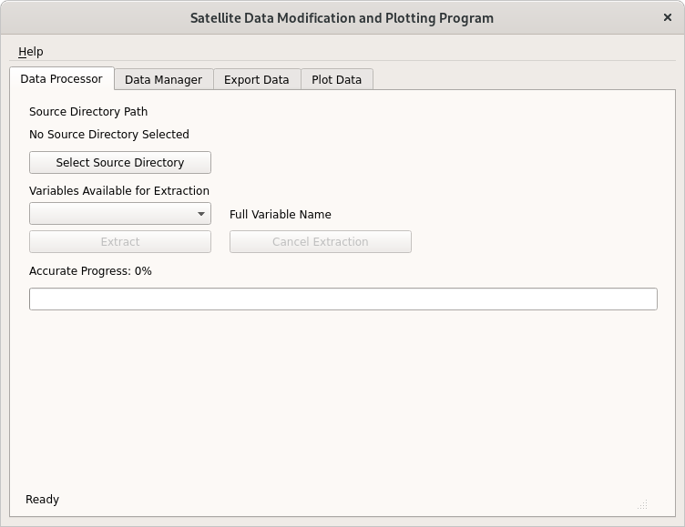
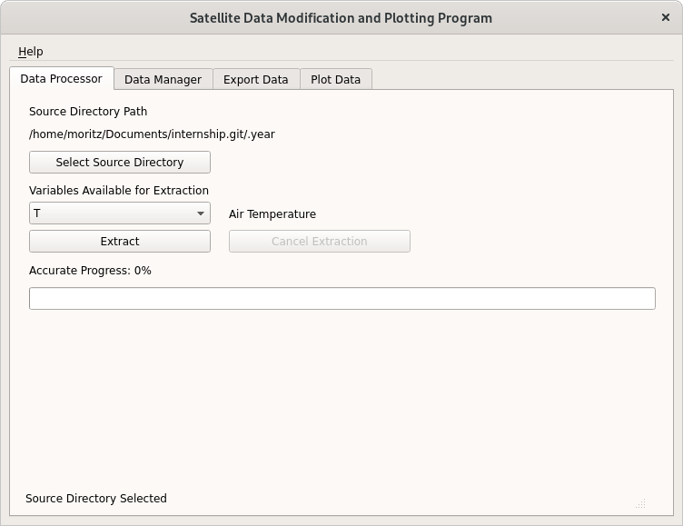
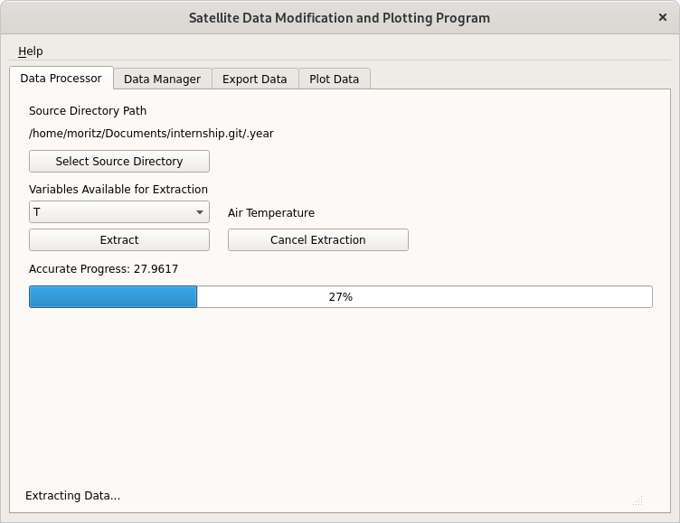
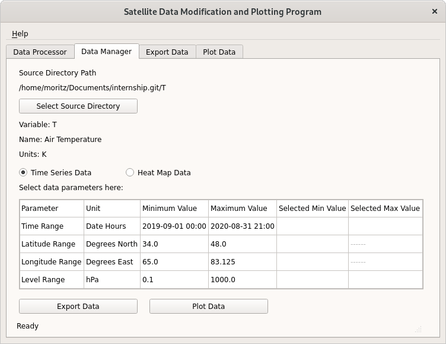
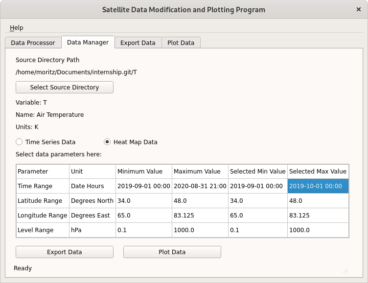
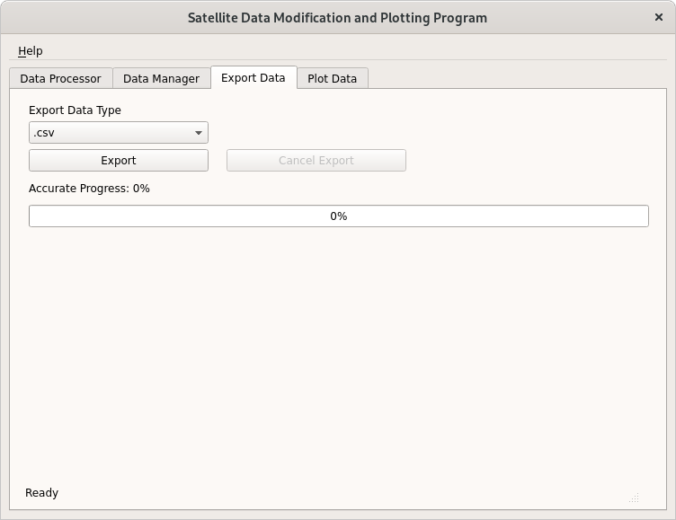
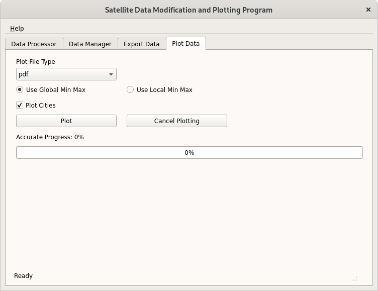

This program is meant to convert netCDF files into numpy npz files. These files can then be graphed using this program or exported as CSV or other files. The following help file will explain how to use the program.
The Data Processor is responsible for converting netCDF files into NPZ files. It extracts the specified variable and metadata. To select a source directory, press the Select Source Directory button. The source directory must contain netCDF files (*.nc4 or *.nc).
To select a variable to extract, select it from the combo box. The full name of the variable will be displayed for convenience. To begin the extraction and choose a destination directory, press the Extract button. Press Cancel Extraction to stop the extraction before it is complete.
The data will be saved in a new folder in the destination directory that is named the same as the variable. Attention: if the source directory contains many netCDF files, the extraction process might take multiple minutes.
The Data Manager is responsible for selecting a subset of the data extracted using the Data Processor. It is also responsible for selecting the type of data that should be used. The available options are time series and heat map. To select a source directory (the one created by the Data Processor) press the Select Source Directory button.
Next, select which type of data you want to use. Then use the table to enter the minimum and maximum values you want your data to have. Here the minimum and maximum values that the data contains are shown and all input is validated. The table automatically adjusts to the type of data requested. Finally, click on either the Export Data or the Plot Data button to start the associated processes. Take note that you may always come back to this tab and change some of the values because they are saved while the data export or data plotting happens.
Exporting Data is the process of saving the data extracted using the Data Processor in a different format. This might be desirable in case one would like to perform some analysis this program does not support or wishes to share this data in a more common format. To export data, simply select the file type you want to export to and click Export. The data selected in the data manager will be exported to the selelcted file type. It will be saved in a folder called variable name-exported which will be created in the folder you select after clicking Export. If you chose heat map data, for each time step in your time selection one file containing the corresponding information will be saved. If your data has pressure levels, each of them will be saved in a separate file. For time series data each pressure level is saved to separate file. This can quickly lead to large numbers of files and thus a popup window will inform you how many files will be created so the parameters can be adjusted if needed.
The Data Plotter creates graphs based on the in the Data Manager selected data. The user may choose which file type the graphs should be saved as. Then a choice has to be made whether to use global or local minimum and maximum values. Using global min and max values means that all graphs will have the same scale while local min and max are unique to each file. For heat map data there is an additional option to add the larger cities of the region to the graph. If time series data was selected, each pressure level (if applicable) will be graphed separately. If heat map data was selected, for each time step and for each pressure level per time step (if applicable) a graph will be generated. Because this can lead to large numbers of files, a popup will warn the user how many files would be created. The files will be saved in a directory called variable name-plotted in the destination directory the user chooses after clicking Plot.
